PeopleSoft Event Listener orchestration enables you to process the user events received from PeopleSoft application and update them in a target application. PeopleSoft is the HR source of truth where user onboarding, updates, and termination activities take place.
An event is triggered in PeopleSoft when any of the following HR actions takes place in PeopleSoft:
These events are sent from PeopleSoft as an XML message string to the Aquera web service. Aquera event orchestration converts these messages to the JSON format and then updates the changes in the target application. Click here to see a sample XML message received from PeopleSoft.
This document details how the PeopleSoft Listener orchestration must be setup to automatically synchronize the user data in Okta based on the user events triggered from PeopleSoft.
Prerequisites
Setting the PeopleSoft Event Listener Orchestration
Configuration
Attributes Mapping
Group Management
Aquera Web Service URL for Posting Events
Script Orchestration
Setting up the Scheduled Script Orchestration
Configuration
Script for User Activation/Reactivation
Script for User Deactivation
Script for Updating Future Effective Values for Users
Conclusion
This section details the procedures to setup the PeopleSoft Event Listener orchestration to update the user events in Okta.
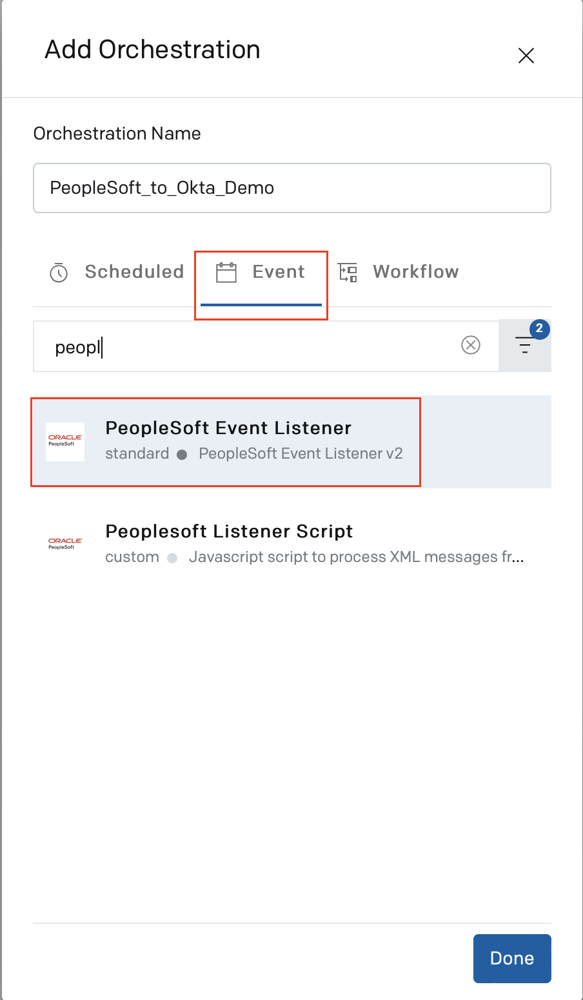
The following procedures are involved in the orchestration setup:
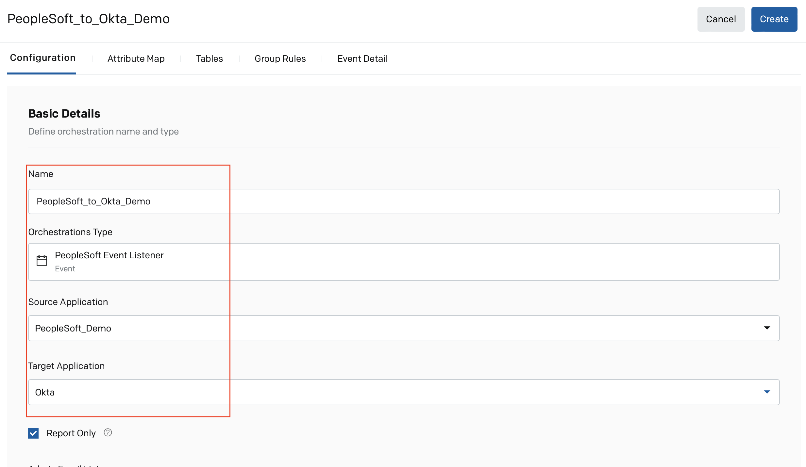
If you want to send the orchestration's outcome to a specific set of users, email IDs of those users can be provided in the Admin Email List field.
Creation Email Details
Deactivation Email Details
Advanced Details
The XML messages received from PeopleSoft are parsed in the orchestration and converted to the SCIM attributes.
This section provides information on how the user attributes from PeopleSoft can be mapped to the Okta user attributes in the Attribute Map tab.
The following are the most commonly used expressions in the mapping of various user attributes:
| Okta Attribute | Mapping Expression |
| userName |
(%ATTEMPT <= SOURCE.name.givenName.length) ? (SOURCE.name.givenName.substring(0,%ATTEMPT) + SOURCE.name.familyName + '@sample-org.com').toLowerCase().toEmail() : (SOURCE.name.givenName + SOURCE.name.familyName+ (%ATTEMPT-1) + '@sample-org.com').toLowerCase().toEmail() |
| phoneNumbers(mobile).primary |
(SOURCE.phoneNumbers[mobile].value && |
| phoneNumbers(mobile).value |
(SOURCE.phoneNumbers[mobile].value && |
| phoneNumbers(work).primary |
(SOURCE.phoneNumbers[work].value && |
| phoneNumbers(work).value |
(SOURCE.phoneNumbers[work].value && |
PeopleSoft provides options to set multiple future effective dates for user attributes. User records can have attributes that hold different values over a period of time based on their effective dates. The value of a user attribute can change as and when an effective date has reached.
To handle attributes with future effective dates, create a custom attribute in Okta with the following naming convention: <attributeName>_FUTURE. For example, if Location is an attribute with multiple future effective dates, create a custom attribute in Okta with the name, Location_FUTURE.
{attributeName}_FUTURE will contain the list of updates that need to take effect for that attribute. Each update contains the effective date of the change and the value of the change. The list of updates can be in the format ["<effective_date>":{<attribute_value>}"]. For example, [“2021-10-10:{location1}”, “2021-11-10:{location2}”].
Expressions must be provided in the Attribute Map tab for such future effective attributes to populate this list. We must also create a script orchestration to read through this list of updates in the future attributes and apply the changes to the corresponding attributes in Okta when the effective date has passed. For the script, refer to the Script for Updating Future Effective Values for Users section.
The following is a sample mapping expression that can be used for the badgeNumber custom attribute with future effective values. Similar expression can be used for other attributes with future effective values.
if(DEST)
{
if ((SOURCE[IAN].badgeNumber!= undefined) &&
(DEST[IAN].BADGE_NBR_FUTURE ==' '
|| DEST[IAN].BADGE_NBR_FUTURE =='[]'
||DEST[IAN].BADGE_NBR_FUTURE == null))
{ `[{"date":"${SOURCE[IAN].effDate}",
"value":"${SOURCE[IAN].badgeNumber}"}]` }
else if (SOURCE[IAN].badgeNumber != undefined &&
DEST[IAN].BADGE_NBR_FUTURE!= undefined)
{ DEST[IAN].BADGE_NBR_FUTURE.replace("]",`,
{"date":"${SOURCE[IAN].effDate}","value":"${SOURCE[IAN].badgeNumber}"}]`); }
}
else if(SOURCE[IAN].badgeNumber!= undefined)
{
`[{"date":"${SOURCE[IAN].effDate}","value":"${SOURCE[IAN].badgeNumber}"}]`
}
else if(SOURCE[IAN].badgeNumber== undefined)
{
`[{"date":"${SOURCE[IAN].effDate}","value":" "}]`
}
You can download this sample expression here.
Sample Attribute mapping:
An attributes mapping template is attached for your reference.
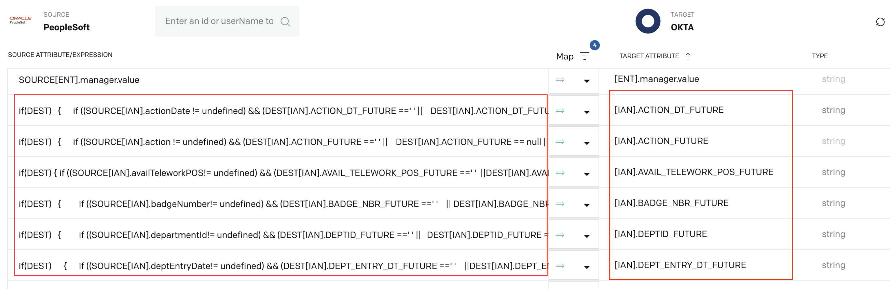
Group management must be enabled in the orchestration to categorize the users for effective activation, termination, and reactivation of users, and for updating the user attributes with future effective values.
In the Group Management Restriction List on the Configuration tab, enter the names of the groups that are created in Okta for the following user categories:
In the Group Rules tab, you can set the rules for each user category (group), based on your requirement. The users will be added to a group when they meet the conditions set in the group rule. Sample expressions are provided here for your reference.
Rule for Users to be Activated
All new hires and rehires that have an effective date for activation will be added to this group in Okta.
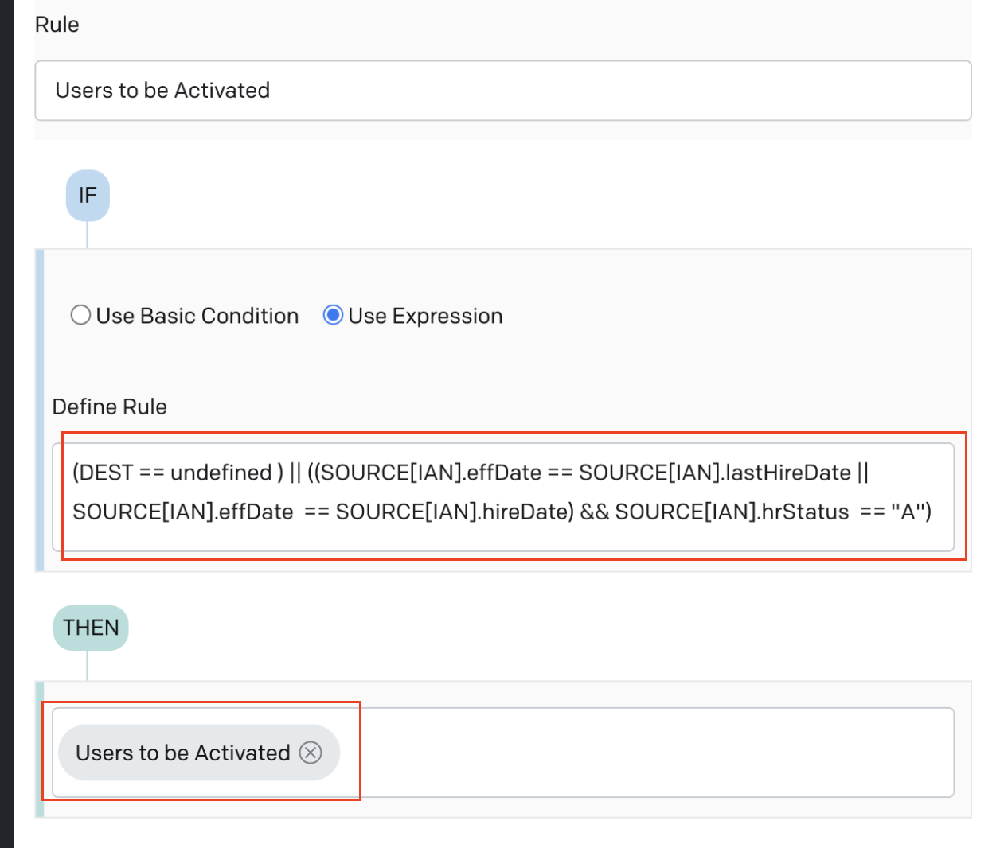
Rule for Users to be Deactivated
Users that are terminated (with Inactive status) in PeopleSoft are added to this Okta group.
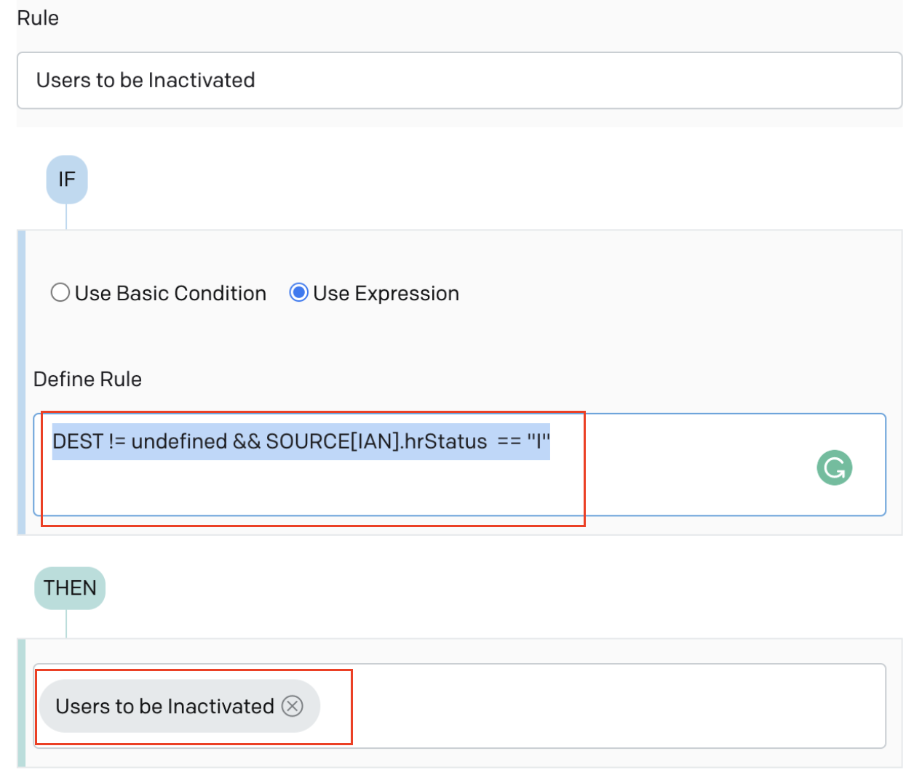
Rule for Users to be Reactivated
Rehires that are yet to be activated will be added to this group.
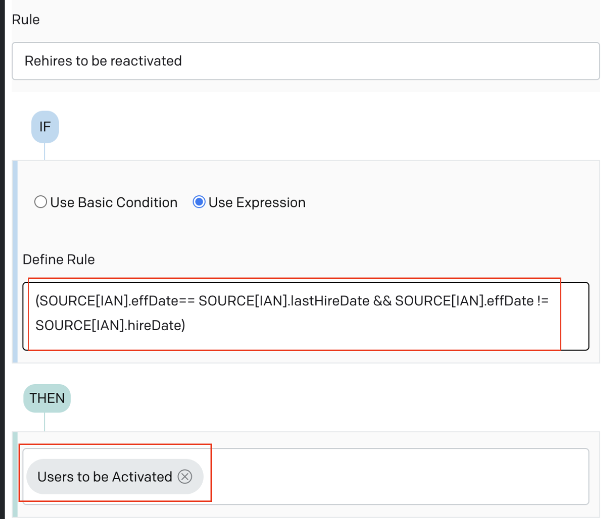
Rule for Users with Future Updates
Users having attributes with future effective values will be added to this group.
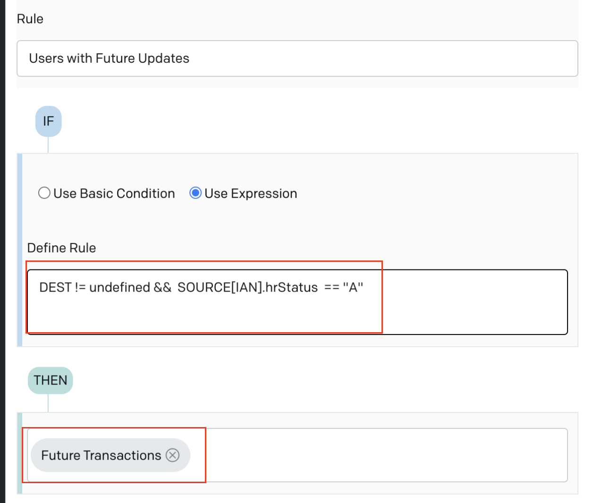
In the Event Detail tab of the PeopleSoft Event Listener orchestration, a URL is displayed as follows:
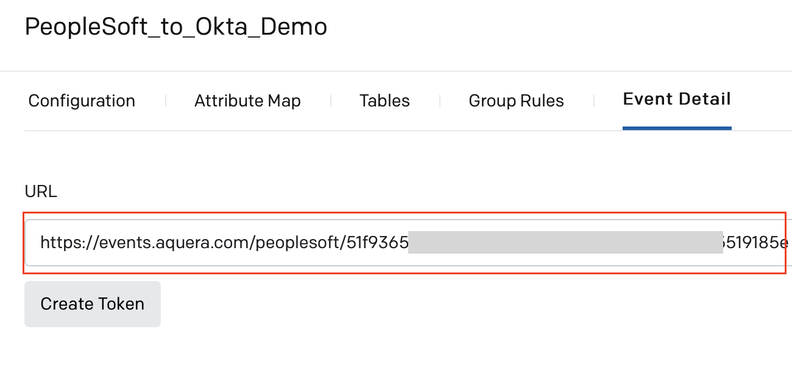
This is the Web service URL to which user events that are sent from PeopleSoft in the XML format must be published.
You must click Create Token to generate a token.
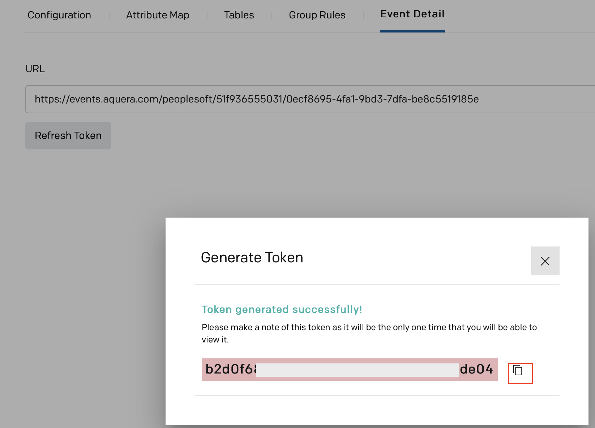
The new token must be copied and saved securely. This token must be configured in PeopleSoft for integration with Aquera.
Note: PeopleSoft administrator must configure the web service URL and the event token in PeopleSoft for publishing the events to this web service. After successful integration of PeopleSoft with Aquera, the token must not be refreshed in Aquera Admin console to avoid integration issues.
Three scheduled script orchestrations need to be setup in Aquera Admin console for the following purposes:
This section details the procedure to setup a scheduled script orchestration to update the users in Okta.
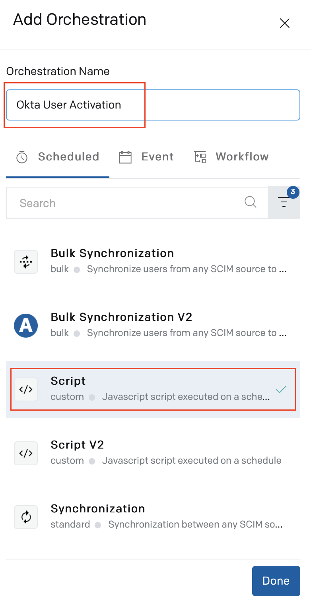
The scripts pertain to the actions to be performed on the user accounts in Okta.
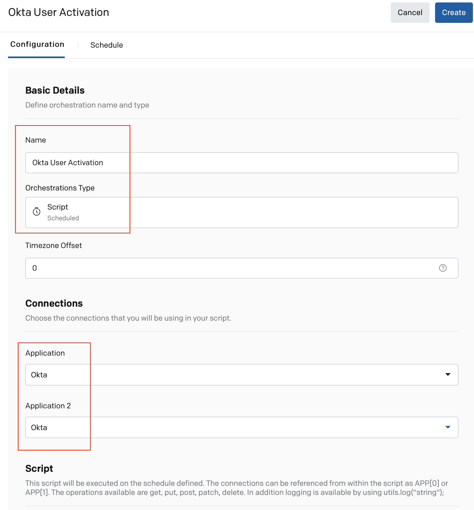
All the new hires/rehires that are yet to be activated are part of the Users to be Activated group.
This section provides the script that can be used to activate a new hire on the effective date of activation. The orchestration must be scheduled to run every day to check if the effective date of activation has reached for a new hire and to activate the account accordingly.
When a new hire is activated, the user record will be removed from the Users to be Activated group.
Note: The new hire account will be in the Staged status in Okta until the account is activated.
Click here to download a sample script for user activation/reactivation.
When an event is received from PeopleSoft with a termination date, the user in Okta will be updated with that termination date and they are added to the Users to be Inactivated group. When the termination date has reached, the user has to be deactivated in Okta.
The orchestration must be scheduled to run every day to check if the effective date of deactivation has reached for a user and to deactivate the account accordingly.
This section provides the sample script that can be used to deactivate a user in Okta when their termination date has reached. The script also provides option to set the delay for deactivation (in hours).
Click here to download a sample script for user deactivation.
An active user can have attributes that hold different values over a period of time based on their effective dates. For example, a user's location can be location1 for a period of time, location2 for another period, and so on. The effective dates determine when each of those values must be updated for the user attribute in Okta. In this case, the attribute values must be automatically updated based on the effective date.
The orchestration must be scheduled to run every 15 minutes to check if the effective date and time has reached for user attributes and to update the values accordingly.
This section provides the script to retrieve users from the Future Transactions group in Okta, which has all the users having attributes with multiple future effective values. When all the future effective values are updated for all such attributes of a user over the period of time, the user will be removed from this group.
Click here to download a sample script for updating future effective values in user attributes.
After the above setup is completed,